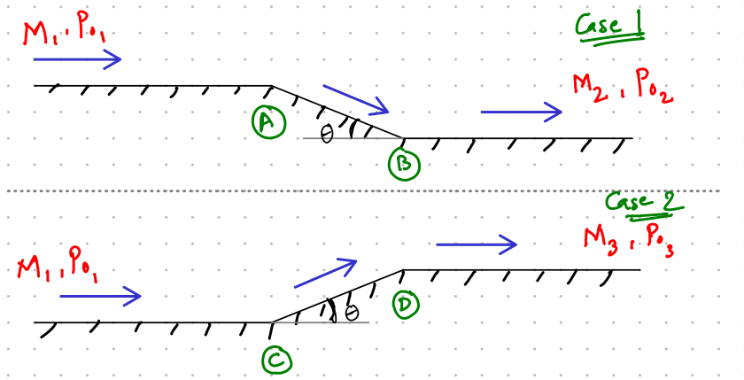
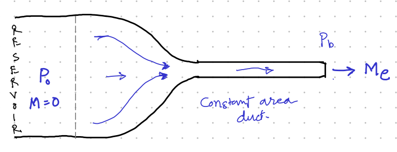
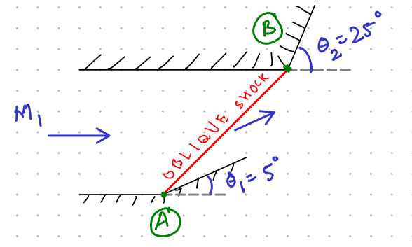

Calculate \(M_2\).
Calculate \(M_3\).
Calculate \(p_{0_2}/p_{0_3}\)
Which flow pattern is preferable and why?
It is given that \(\theta = 10^o\). \(\Omega\) is equal to the last digit of your SC number. For example, if your SC number is SC18B023, then \(\Omega = 3\).

Q: Consider the converging duct shown above. For a fixed reservoir pressure (\(p_0\)), the exit Mach number (\(M_e\)) can be changed by reducing the back pressure (\(p_b\)). Plot a graph of \(p_b/p_0 \in [0, 1]\) versus massflow rate (\(\dot{m}\)). Clearly mark the point on the graph at which \(M_e = 1\).
Q: Show that the energy equation for inviscid adiabatic isentropic flow can be written as \[\frac{u^2}{2} + \frac{\gamma}{\gamma-1}\left(\frac{p_0}{\rho_0}\right)\left(\frac{p}{p_0}\right)^{(\gamma-1)/\gamma} = \frac{\gamma}{\gamma-1}\frac{p_0}{\rho_0}\] Q: A supersonic flow at \(M_1 = 2 + 0.1\Omega\) passes over a wall in two scenarios. In case 1, it reaches Mach number \(M_2\) and total pressure \(p_{0_2}\). In case 2, it reaches Mach number \(M_3\) and total pressure \(p_{0_3}\). Please note that the diagram shows two different cases. DO NOT consider it as a duct. Q: Neatly draw the flow pattern after the exit of a C-D nozzle for theUnder expanded flow
Over expanded flow
Clearly show the slipstream, oblique shocks and expansion fans. Clearly identify regions with static pressures equal to \(p_e\) and \(p_b\). Here, \(p_b\) is back pressure and \(p_e\) is exit pressure.
Q: Consider the flow as shown in figure with \(M_1 = 2 + 0.1\Omega\). An oblique shock generated at corner A is reflected at corner B. Angles \(\theta_1 = 5^o\) and \(\theta_2 = 25^o\). What is the static pressure experienced by the upper wall after point B? The inlet pressure \(p_1 = 1~\mbox{bar}\) and temperature is \(T_1 = 298~\mbox{K}\).\(\Omega\) is equal to the last digit of your SC number. For example, if your SC number is SC18B023, then \(\Omega = 3\).

Q: Using thin airfoil theory, show that the coefficient of lift only depends on the angle of attack (\(\alpha\)) for a general thin airfoil with camber variation \(c(x)\) and thickness variation \(t(x)\). Q: Consider two constant area ducts (with friction) of equal area kept in the same flow. These ducts (A and B) are kept so far apart that they do not affect each other. Also given that \(L_A < L_B\), where L is the length of the duct. Under what conditions will the following relations for massflow rate hold true.\(\dot{m}_A = \dot{m}_B\)
\(\dot{m}_A > \dot{m}_B\)
Answers without explanation will not be graded.
Q: Air at a total pressure and temperature of 8 atm and 450 K enters a frictionless constant cross-section duct. A heat addition of 850 kJ/kg makes the flow to choke at the duct exit, determine the inlet Mach number and the total pressure and total temperature at the exit.(Applied Gasdynamics (Ratha) Prob. 8.41 Pg. 334)